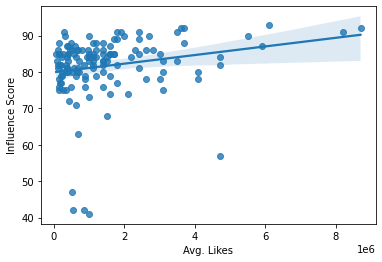

keep in mind that the data i am using is very outdated and might not be the
most accurate to what my claims are
with the data i recieved i asked the question of
"Is there a positive, statistically significant correlation between the average likes an influencer has on a post and their influence score?"
According to the graph #2 we can see that there is a slight correlation with the data but
its hard to conclude what its trying to tell us but its all clustered together and the correlation of more likes = better influencer score is there but its not very strong.

If you want to see the next few graphs and conclusions i made,
click this button